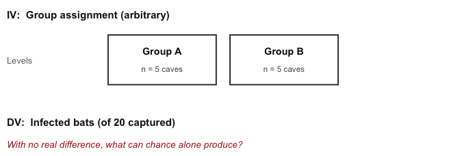
4 Inference and Hypothesis Testing
Data and data sets are not objective; they are creations of human design. We give numbers their voice, draw inferences from them, and define their meaning through our interpretations.
Katie Crawford
Inferential statistics is the branch of statistics concerned with drawing conclusions about populations or causal relationships from sample data. It provides the tools to answer questions like: did our manipulation actually cause a change, or could the pattern we observed have arisen by random chance alone?
This chapter does that in two parts. The first half builds the logic by simulation, with no formulas: we work out what chance alone can produce, then compare a real result against it. The second half replaces the simulation with the standard hypothesis testing machinery, because once you can assume a known reference distribution you no longer have to rebuild the chance window from scratch every time.
By the end of this chapter you should be able to:
- Explain why two groups can differ when nothing caused it, and describe what chance alone is capable of producing.
- Define the key players in a hypothesis test: null and alternative, population and sampling distributions.
- Test \(H_0\) three equivalent ways: a test statistic against a critical value, a confidence interval, and a \(p\)-value.
- Choose between a one-tailed and two-tailed test and justify the choice.
4.1 Brief review of Experiments
A controlled experiment is a structured method of data collection designed to support inferences about causality. Experiments involve deliberately manipulating one condition while holding others constant, then measuring the response. Every experiment has two core components: the independent variable, the condition under experimental control, and the dependent variable, what is measured. Causal forces produce detectable change. If the independent variable truly affects the dependent variable, then a well-designed experiment should detect that change.
The central question becomes: how do we know if a measured difference between conditions reflects a real causal effect? Data always contain variability; measurements fluctuate even when nothing has changed. To decide whether a difference is real, we need tools that can distinguish meaningful change from background noise.
4.2 Is there a difference?
Back to experiments. We want to know if an independent variable (our manipulation) causes a change in a dependent variable (measurement); if it does, we should see differences in the measurement as a function of the manipulation.
Some manipulations are so overwhelming that no statistics are required to see them. Flip a light switch up and the light comes on; flip it down and it goes off, every time. You don’t need a \(t\)-test to tell you that flipping the light switch is the cause of the change in brightness.
Nothing in environmental science behaves like this. Effects are real signals buried in noisy, variable measurements, where flipping the switch changes the outcome on average. Not in every instance, and not by the same amount every time.
4.2.1 Chance can produce differences
Random chance can produce apparent differences between groups even when no real difference exists. We have already seen this with sampling: two samples from the same distribution come out differently. The same principle applies when we compare group means. This is a fundamental problem for inference.
Consider a scenario where we expect to find no real difference. A researcher surveys 10 caves for white-nose syndrome, a fungal disease that has killed millions of North American bats, capturing 20 bats at each cave and counting how many show visible signs of infection. Figure 4.1 lays out the design.
The key feature is that all 10 caves are drawn from the same population. There is no treatment, no environmental gradient, nothing systematic separating them, so the true infection rate is identical everywhere. Splitting them into two groups of 5 is arbitrary. Any difference we see between those groups therefore has to be sampling error, which makes this the cleanest possible look at what chance alone can manufacture.
Here is data from one run of this scenario:
| Group | Infected bats (of 20) |
|---|---|
| A | 2 |
| A | 9 |
| A | 11 |
| A | 8 |
| A | 12 |
| B | 8 |
| B | 12 |
| B | 11 |
| B | 4 |
| B | 10 |
Each row in the table is one site. The first column shows the group assignment, and the second shows how many of the 20 captured bats were infected. Did Group A have more infected bats on average than Group B?
It is easier to see the comparison in a bar graph (Figure 4.2), which shows the mean count for each group.
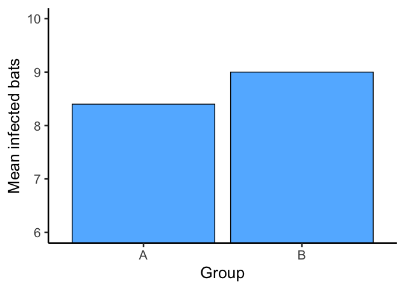
The bars are not the same height: Group A and Group B have different mean counts. But both groups were drawn from the very same population of sites, so this isn’t a real difference in infection risk, it’s sampling error.
This is the core inference problem: differences appear even when nothing real caused them. How can we tell whether an observed difference is real or just the result of chance?
4.2.2 Differences due to chance can be simulated
Chapter 2 showed that chance alone can produce spurious correlations. The same is true for group means: we can characterize exactly what chance is capable of producing in a comparison of group means. Once we know what chance typically does, and what it cannot do, we have a basis for judging whether our observed difference falls within or outside its range.
The first step is to replicate the sampling scenario many times. Figure 4.3 shows bar graphs of the mean infected count for Group A and Group B across 10 replications of the same survey: all 10 sites sampled from the same population, split 5+5, and means computed.
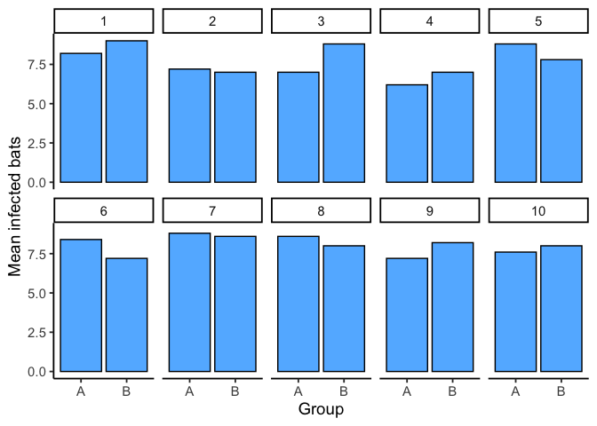
These 10 replications show that chance produces different mean differences each time. Sometimes Group A is higher, sometimes Group B is higher, sometimes the means are nearly equal. All of this variation arises from sampling error alone: there is no real difference in the population.
4.3 Chance makes some differences more likely than others
We have seen that chance can produce group mean differences. But we still need to characterize what chance usually does and what it rarely does. If we can establish the range of differences that chance produces, we can build a window: differences inside the window could plausibly have arisen by chance; differences outside the window could not.
We summarize each replication as a single difference score: the mean count for Group A minus the mean count for Group B. Figure 4.4 shows those difference scores for the 10 replications above.
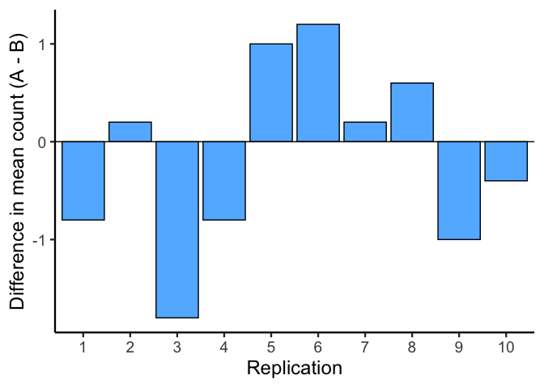
A bar at zero means the two groups had the same mean count in that replication. Positive values indicate Group A was higher; negative values indicate Group B was higher.
The differences in these 10 replications mostly fall in a narrow range. To better characterize what chance can do, we run 100 replications. The results are shown in Figure 4.5.
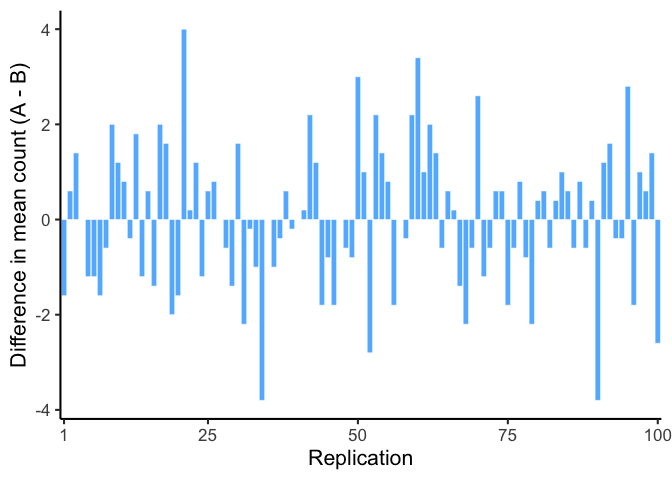
The x-axis just indexes the 100 replications; the information is on the y-axis. Many different difference sizes occur, but the range is bounded: the bars stay within a limited band around zero, and differences several times larger never show up. This begins to define the window of what chance can produce.
To get an even clearer picture, we now run 10,000 replications and plot the distribution of difference scores as a histogram. This gives a precise view of which differences happen often and which are extremely rare.
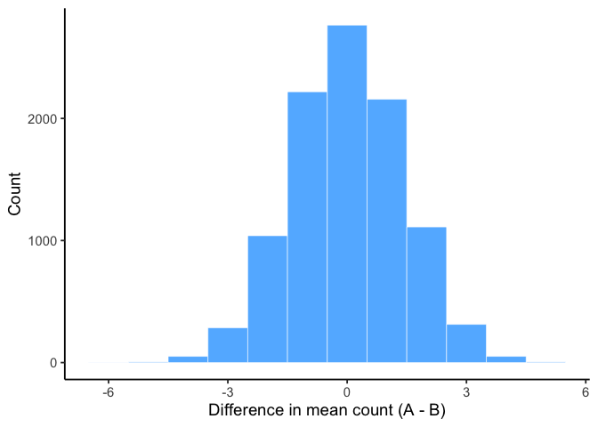
This histogram is the chance window for this study design. It shows that chance most often produces a difference near zero, the tallest bar in the center. Larger differences in either direction occur less and less frequently. We can see that differences larger than +/- 3-ish are possible, but very rare.
We can use this window to evaluate any observed difference. If a study found a difference of 1 infected bat between two groups, that falls well inside the chance window: differences of that size occur frequently by random sampling alone. If the study found a difference of 6 bats, that would fall far outside the window; chance produced a difference that large 0 times out of 10,000. When an observed result almost never happens by chance, we have grounds to conclude that something other than chance produced it.
4.4 Simulation-Based Inference
Most of the inference done throughout the rest of this course comes down to one question: did chance produce the difference in the data? If chance is a very unlikely explanation, we infer that something about the manipulation, not chance, produced the difference.
CautionWarning: Beyond ruling out chance
Every hypothesis test in this book asks one question: could chance alone have produced this result? It is not the only question available.
Other methods start from two or more candidate explanations, say a steady linear decline versus a sharp threshold response, and ask which one the data support better.
Ruling out chance tells you that something is going on, but not always what. It is worth knowing the difference, because “significant” only ever answers the first question.
The simulation-based approach here answers that question the same way every formal test does.
4.4.1 How rare is rare enough?
Question: How many times does something need to happen for it to happen “a lot”? How rare does something need to be before you stop worrying about it?
Environmental scientists already have a working vocabulary for this: the 100-year flood. A “100-year flood” doesn’t mean floods that size happen once a century on a schedule; it means that in any given year, there’s about a 1-in-100 chance of a flood that severe. Would you build a house in that floodplain? Many people do, and often regret it, because a 1% annual chance still adds up over a 30-year mortgage (roughly a 26% chance of at least one such flood in that span). A location with a 1-in-10,000 annual flood risk is very different: over the same 30 years, the cumulative chance is under 0.3%.
That’s the intuition we need going forward: rare events still happen, but how rare something is changes what you’re willing to conclude from seeing it. Later in this chapter, we’ll use 1-in-10,000 as our own working definition of “rare enough to call surprising.”
4.4.2 Drawing the line: chance vs. not chance
We already have everything we need to make this concrete: the bat simulation above gave us 10,000 mean differences that chance alone can produce when there is no real difference between groups. That histogram (Figure 4.6) is our reference distribution. Now we use it to make a decision.
Let’s draw some lines on that same histogram and label two kinds of regions:
Region of chance. Chance did it.
Region of not chance. Chance didn’t do it.
The boundaries are the minimum and maximum values chance actually produced across the 10,000 replications. Figure 4.7 shows this applied to our count differences.
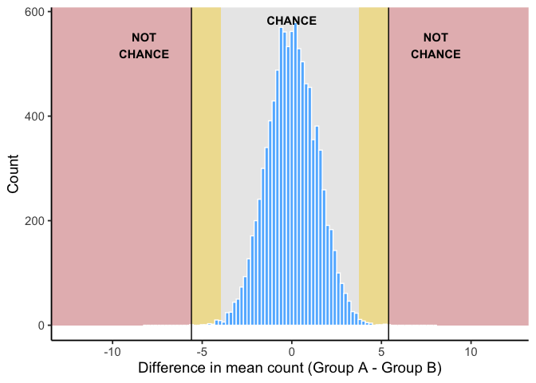
Here’s how the decision works. The grey band in the middle is the chance window: our 10,000 simulated replications produced differences from roughly -5.6 to 5.4 bats, and a result sitting well inside it, close to 0, is exactly what chance turns out routinely. No grounds for suspicion. The red zones on either side are the ones chance never reached, so a difference out there would give real grounds to suspect something beyond sampling error. This is the region where you would reject chance as the explanation.
The gold bands are the honest part: differences near the edge of what chance can do, but not quite past it. Chance could produce something in the gold zone, it is technically still inside the window, but it does so rarely. That’s not a clean yes/no; it’s a “probably not chance, but I can’t rule it out,” and how you handle that ambiguity is a judgment call. More conservative researchers would shrink the gold zone (fewer false alarms, more missed real effects); more permissive researchers would expand it (the reverse trade-off). All of science formalizes this trade-off with a standard convention (\(\alpha = .05\)), which we’ll discuss more later in this chapter, so that researchers aren’t each inventing their own boundary from scratch.
4.5 From simulation to formal hypothesis tests
Everything so far was built by brute force: split the sites into groups at random ten thousand times, collect the difference each time, and look at where a real result falls against that pile. As you can imagine, this is not practical most of the time.
The rest of this chapter is how we actually conduct statistical inference in practice. Once we are willing to assume a known reference distribution, the simulated chance window can be replaced by a curve we already know the shape of, and the decision becomes a calculation rather than a simulation. The logic does not change, only the bookkeeping does.
4.6 Core Players (distributions)
To make sense of hypothesis testing, it helps to picture four kinds of distributions. Later in the chapter we’ll put them together, but first we define them one at a time:
Null Distribution - The hypothesized population distribution under the assumption that the null hypothesis \(H_0\) is true.
Estimated Population Distribution - The distribution we infer from our sample. This represents what the data suggest about \(H_a\). (Sometimes called the inferred parent distribution.)
True Population Distribution - The actual distribution from which our sample was drawn. We never know this perfectly, but it’s the reality we’re trying to approximate.
Sampling Distribution of the Sample Mean - The distribution we’d get if we took many samples and calculated \(\bar{X}\) each time. This is key for connecting sample evidence back to the population.
Null value notation. We’ll write the hypothesized population mean as \(\mu_0\). Hypotheses compare the population mean \(\mu\) to this constant \(\mu_0\). The sample mean \(\bar{X}\) is never part of \(H_0\) or \(H_a\); it’s the evidence we bring to test them.
Note on terms. In this chapter, you’ll sometimes see the phrase parent distribution in the prose. This is just a metaphor: a sample is like a “child” drawn from a “parent” distribution. The standard statistical term is population distribution. Both terms mean the same thing here. For clarity, we’ll use population distribution in figures and definitions, and you can think of parent as a memory aid.
4.7 Terms for Decision Rules
When running a hypothesis test, three terms guide our decision:
Significance level (\(\alpha\)). Chosen before the test. \(\alpha\) is the long-run probability of a Type I error (rejecting a true \(H_0\); more on error types next chapter). A common choice is \(\alpha = 0.05\). Smaller \(\alpha\) makes tests more cautious and produces wider confidence intervals.
\(p\)-value. Assuming \(H_0\) is true, the \(p\)-value is the probability of seeing a test statistic at least as extreme as what we observed. Small \(p\) means our data look unusual under \(H_0\).
Confidence level. Confidence level is the long-run proportion of confidence intervals that contain the true parameter when we repeat the entire data collection and interval procedure.
\[ \text{Confidence Level} = 1 - \alpha \]
With \(\alpha=0.05\), about 95% of intervals constructed this way will capture the true value.
CautionWarning: Don’t misread a confidence interval
Do not say:
“There is a 95% probability this interval contains \(\mu\).”
Instead say:
“We used a procedure that captures \(\mu\) about 95% of the time in the long run.”
4.8 Three equivalent ways to test \(H_0\)
Test statistic / critical values. Choose \(\alpha\), find the corresponding critical value(s) for your test statistic, and compute your observed statistic. Reject \(H_0\) if the statistic falls in the rejection region.
Confidence interval (two-sided). Build a \((1-\alpha)\) CI for the parameter. Reject \(H_0\) if \(\mu_0\) lies outside the CI; fail to reject if it lies inside.
\(p\)-value (probability). Compute the \(p\)-value for your observed statistic under \(H_0\) and compare to \(\alpha\). Reject \(H_0\) if \(p<\alpha\).
Note. Methods 1–2 yield a yes/no at \(\alpha\); method 3 yields a yes/no plus a graded measure of evidence (exact \(p\)).
4.8.1 Test statistic/critical values
Figure 4.8 shows how these ideas come together in a two-sided test. The blue curve is the sampling distribution of the test statistic if the null hypothesis \(H_0\) is true. The dashed magenta line marks the expected center at \(\mu_0\). The red vertical lines are the critical values for \(\alpha = 0.05\). They cut off the most extreme 5% of the distribution: 2.5% in each tail. Those shaded tails are the rejection regions.
Here’s the decision rule:
- If the observed test statistic falls inside the central region, we fail to reject \(H_0\) because the result is consistent with chance variation.
- If it falls in either rejection region, we reject \(H_0\) because the result is too extreme to attribute to chance alone at the 5% level.
This picture makes clear why \(\alpha\) and the \(p\)-value are linked. \(\alpha\) sets the cutoff for how extreme is “too extreme,” while the \(p\)-value tells us how far into the tails our actual result lies.
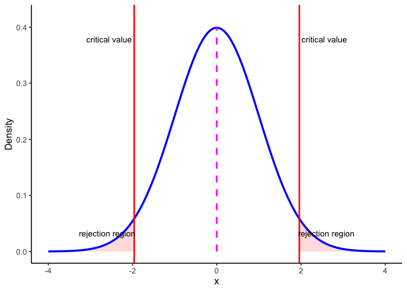
4.8.2 Confidence intervals
Figure 4.9 shows another way to make the same decision. The blue curve is the null distribution (\(H_0\) true), and the dark green curve is the sampling distribution of the mean based on our sample. The dashed green curve is the estimated population distribution we infer from the sample.
The thick dark green bar at the bottom is the 95% confidence interval around the sample mean \(\bar{X}\). The magenta dashed line marks \(\mu_0\), the hypothesized mean under \(H_0\).
Decision rule:
- If \(\mu_0\) lies inside the CI bar, we fail to reject \(H_0\).
- If \(\mu_0\) lies outside the CI bar, we reject \(H_0\) at \(\alpha=0.05\).
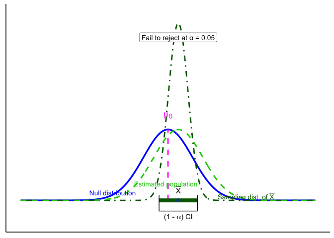
For common models, a two-sided level-\(\alpha\) test of \(H_0:\ \mu=\mu_0\) is equivalent to checking whether \(\mu_0\) lies inside the \(100(1-\alpha)\%\) confidence interval. The CI is often the most intuitive way to see this: it shows both the decision (reject or not) and the range of parameter values still consistent with the data.
4.8.3 p-values
The \(p\)-value is the probability, under \(H_0\), of obtaining a test statistic at least as extreme as the one you observed. In practice, you compute it from your observed statistic using software or a table. Reject if \(p<\alpha\).
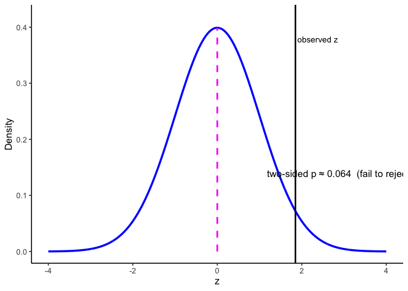
4.9 One- and Two-Tailed Tests
Two-tailed tests allow for differences in either direction:
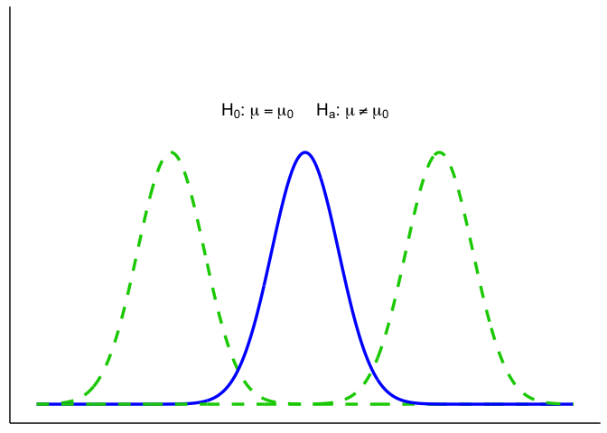
One-tailed tests only look in one direction (smaller or larger than \(\mu_0\)):
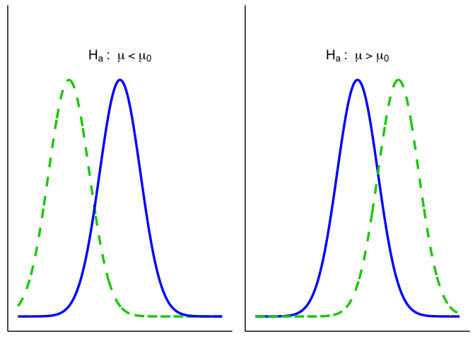
4.9.1 One- vs. Two-Sided: which and why?
Use this rule of thumb:
- Two-sided (default): You care whether \(\mu\) differs from \(\mu_0\) in either direction.
- One-sided (only if justified): Differences in the opposite direction are scientifically irrelevant and would not change your decision or action.
4.10 Putting it all together
Let’s bring the key players together. These are the elements we’ll use throughout the chapter:
- Blue solid line = Null distribution (\(H_0\)).
- Orange solid line = True population distribution (what actually generated the data).
- Light green dashed line = Estimated population distribution (inferred from the sample; our stand-in for \(H_a\)).
- Dark green dot-dashed line = Sampling distribution of the sample mean, \(\bar{X}\).
- Magenta dashed line = Hypothesized mean \(\mu_0\) (under \(H_0\)).
- Thick dark green bar = 95% confidence interval (CI) around the sample mean \(\bar{X}\).
Up to now we’ve introduced each distribution separately. Let’s layer them one at a time to see how they connect, building up to Figure 4.16, which serves as the legend for every graph after it.
1. Null vs. true population.
In an idealized world where \(H_0\) is exactly true, the true population (orange) and the null distribution (blue) are identical. In reality, we never know the orange curve. It’s shown here for illustration.
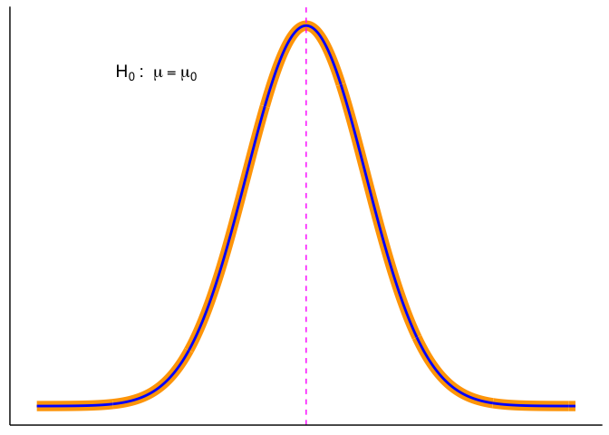
2. Adding the sampling distribution. We never know the true parent distribution directly. What we do have is a sample, and from that we can construct the sampling distribution of the mean (dark-green dot-dash). This distribution underlies our ability to estimate a CI (dark green horizontal line).
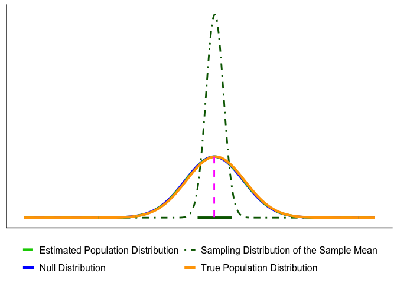
3. Adding the estimated population distribution.
From our sample we also infer an estimated population distribution (light-green dashed). In the best case, this lines up closely with the true population (orange). The CI bar shows that the sample mean is consistent with \(\mu_0\).
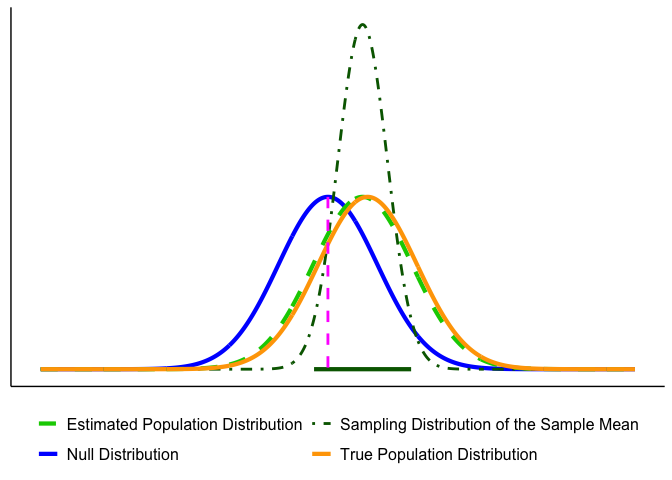
Putting everything together, you’ll see graphs moving forward that are all variations on the figure below. By now you should recognize each element.
Key reminder: \(\mu_0\) (pink dashed line) comes from the null hypothesis. The unknown \(\mu\) is what we’re trying to learn about, and we approximate it from the sample through the estimated population distribution and the sampling distribution of \(\bar{X}\).

4.10.1 Decision Outcomes
Test outcomes are binary: we either reject \(H_0\) or fail to reject \(H_0\). We never accept \(H_0\), because sampling variability means we can’t prove it’s true, only that the data are consistent with it. Similarly, we don’t formally accept \(H_a\), but we can say the results provide support for \(H_a\) when \(H_0\) is rejected.
If the observed statistic falls in either tail beyond the critical value(s), reject \(H_0\). Otherwise, fail to reject \(H_0\). Report the exact \(p\) and an effect size or CI.
Here are our options (for a two tailed test).
- Reject the Null Hypothesis (Two-Tailed Test). The sample mean falls beyond the critical values, in the rejection region. The confidence interval also excludes the null mean (magenta line). In this example, the mean is more than 3 standard errors from \(\mu_0\), which is typically considered significant for common choices of \(\alpha\).
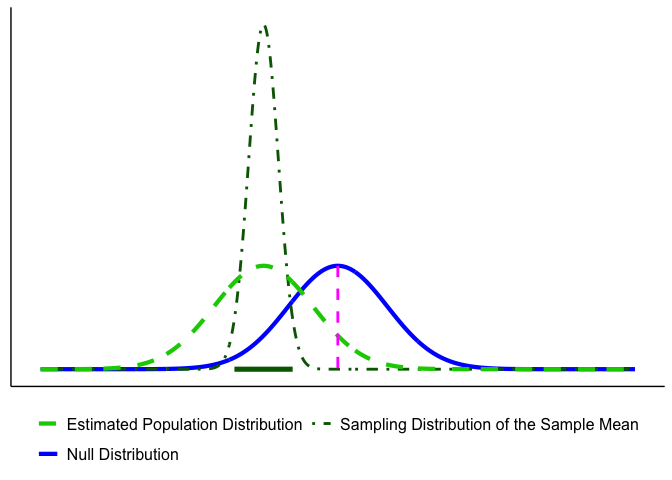
- Fail to Reject the Null Hypothesis (Two-Tailed Test). The sample mean falls in the non-rejection region, and the confidence interval includes the null mean. In this case, the evidence is consistent with chance variation, so we fail to reject \(H_0\).
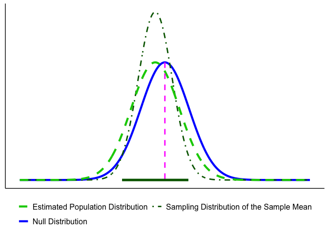
4.11 Chapter Summary
Why it matters. This chapter is the hinge between describing data and drawing conclusions from it. Everything after this point is a variation on one move: work out what chance alone could produce, then ask whether your result is something chance can comfortably explain.
Core ideas
- Chance produces differences on its own. Split one population into two arbitrary groups and their means will differ anyway. The question is never “is there a difference,” it is “is this difference bigger than chance can account for.”
- The chance window is buildable. Repeat a study thousands of times under conditions where you know nothing real is going on, collect the differences, and you have a picture of exactly what chance is capable of for a design your size.
- Rarity is a judgment, and it needs a convention. The 100-year flood shows the reasoning already exists outside statistics: a 1% annual chance is not zero, but it changes what you build. \(\alpha = .05\) is that same judgment, standardized so researchers aren’t each drawing their own line.
- A hypothesis test is the practical shortcut. Once you can assume a known reference distribution, the simulated window becomes a curve, and the decision becomes a calculation. The logic is unchanged.
- Three routes, one decision. A test statistic against a critical value, a confidence interval, and a \(p\)-value are three ways of asking the same question. For a given \(\alpha\) they always agree.
- Commit to one- or two-tailed in advance. A one-tailed test is only justified when theory rules out the other direction. Choosing after seeing the data quietly raises your real error rate above the \(\alpha\) you claimed.
Barnes, Mallory L. 2023. Statistics for Environmental Science.